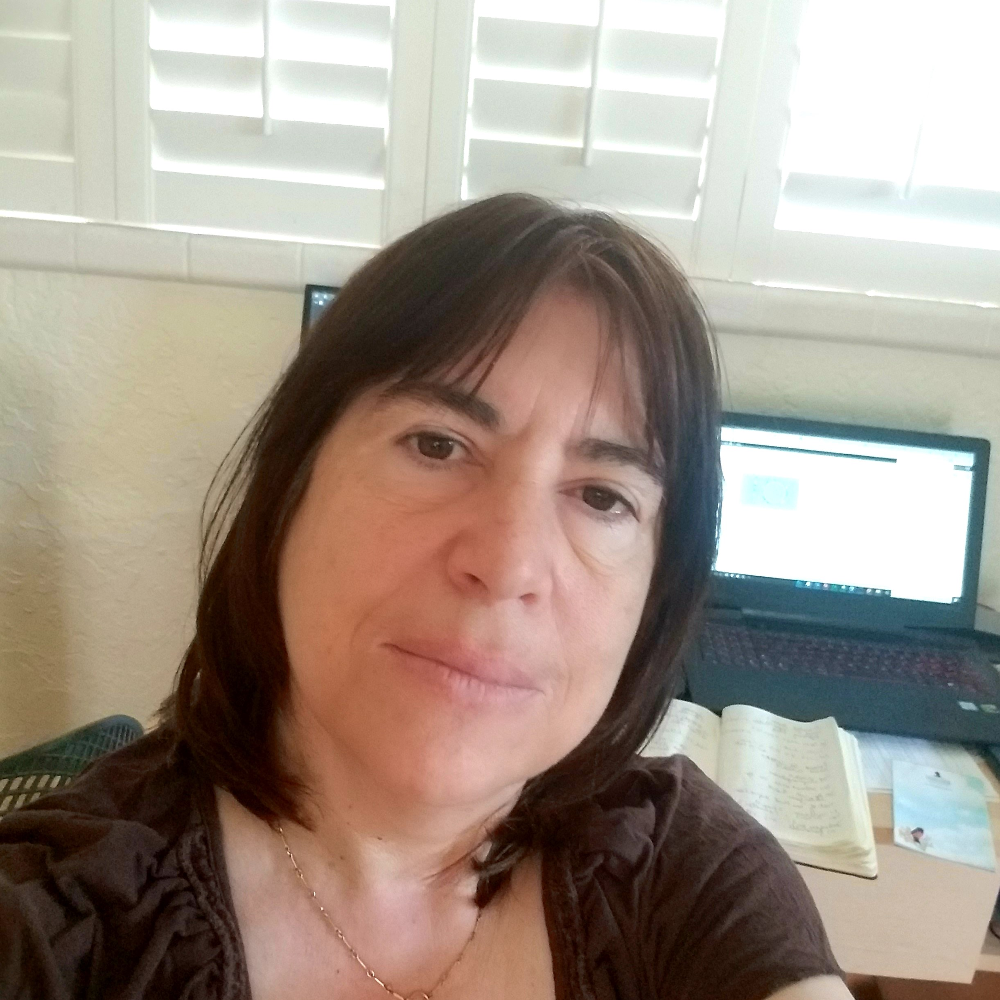

Laura C
Software Engineer and Architect
Education
University of Buenos Aires, Argentina
Licenciate in Computer Science
Professional Experience
Independent Consultant, Software Engineer
Los Altos, CA
January 2020 - Present
- Independent software developer contractor
Lead Software Architect
OnScale (formerly PZFlex LLC), Redwood City, CA - Glasgow, CA
January 2017 - December 2019
- Transitioned simulation tools to Cloud and HPC clusters.
- Developed parallel computing libraries using MPI/Openmp.
- Developed UI and graphical libraries to render multi-dimensional models.
- Managed the CI/CD pipeline.
Lead Software Developer/Senior Associate
Thornton Tomasetti- Weidlinger Applied Science, Cupertino, CA
February 1992 - Dec 2016
- Responsible for the SLDC of the Flex finite element simulation tools.
- Developed an optimization toolbox.
- Developed a viscoacoustic propagation application based on the pseudospectral method.
- Main developer of Integra, software for geophysical inversion.